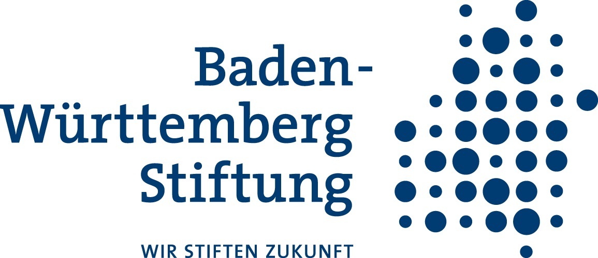

This website was designed in the project “SustAInability and AI - A cross-Cultural Partnership for Improving Education and Environmental Management“, which is part of Baden-Württemberg-STIPENDIUM for University Students – BWS plus, a program of the Baden-Württemberg Stiftung.